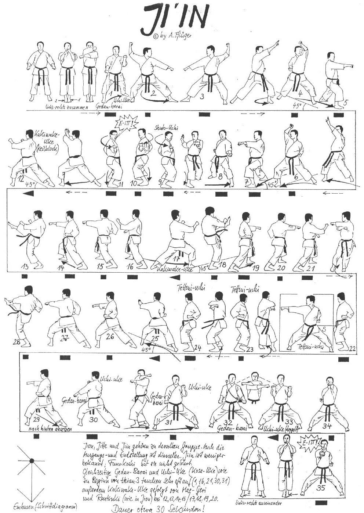

Jiin

- Yoi andando in Eisoku Dachi con le ginocchia leggermente piegate braccia piegate, pugni all'altezza del mento, il palmo sinistro contiene il pugno destro e il pollice sinistro copre il cavo della destra.
- Arretro con la gamba sinistra e vado in Zenkutsu Dachi destro, eseguo contemporaneamente Gedan Barai destro e Uchi Uke sinistro.
- Rotazione in senso antiorario di 90° andando in Hidari Kokutsu Dachi ed eseguo contemporaneamente Jodan Uchi Uke destro Gedan Barai sinistro.
- Facendo perno sui talloni vado in Hidari Kokutsu Dachi ed eseguo contemporaneamente Jodan Uchi Uke destro Gedan Barai sinistro.
- Ruoto il Busto verso sinistra eseguendo Age Uke destro con la mano aperta.
- Avanzo con il piede sinistro ed eseguo Age Uke sinistro a simulare una rottura.
- Avanzo in Migi Zenkutsu Dachi ed eseguo Oi Tzuki.
- Ruoto il Busto verso destra eseguendo Age Uke sinistro con la mano aperta.
- Avanzo con il piede destro ed eseguo Age Uke destro a simulare una rottura.
- Avanzo in Hidari Zenkutsu Dachi ed eseguo Oi Tzuki.
- Sposto il piede sinistro di 45° in senso antiorario ed eseguo Gedan Barai.
- Avanzo tre volte in Kiba Dachi eseguendo Shuto Uchi Jodan tenendo il gomito vicino al tronco e con il palmo della mano rivolto in alto. Kiai.
- Di schiena spostando la gamba sinistra mi porto in Kokutzu Dachi a 45° verso sinistra e unendo gli avambracci frontalmente e perpendicolari al suolo eseguo Kakiwake Uke.
- Allargando gli avambracci a formare una "V" con i gomiti aderenti al busto.
- Eseguo Mae Geri destro, Ren Tzuki e doppia parata Uchi Uke sinistro Gedan Barai destro.
- Di schiena spostando la gamba destra ruoto di 90° verso destra ed eseguo Kakiwake Uke.
- Eseguo Mae Geri sinistro, Ren Tzuki e doppia parata Uchi Uke destro Gedan Barai sinistro.
- Ruotando di schiena mi riallineo alla linea mediana verticale dell’Embusen e andando in Migi Kiba Dachi eseguo Tettsui Uchi orizzontale caricandolo sotto il braccio sinistro.
- Mantenendo la stessa posizione avanzo ruotando di schiena ed eseguo in Hidari Kiba Dachi Migi Tettsui Uchi orizzontale caricandolo sotto il braccio destro.
- Mantenendo la stessa posizione avanzo in Migi Kiba Dachi ed eseguo Migi Yoko Tzuki Chudan.
- Eseguo Tate Shuto sinistro avanzando verso sinistra a 45° in Hidari Zenkutsu Dachi sinistro con l’anca aperta.
- Chiudendo l’anca eseguo Ren Tzuki, tenendo Oi Tzuki sinistro fermo eseguo Keage Migi Mae Geri richiamandolo in posizione iniziale ed eseguendo Gyaku Tzuki, completo la sequenza eseguendo Migi Uchi Uke contemporaneamente a Hidari Gedan Barai.
- Sposto la gamba sinistra in senso antiorario riportandomi in Kiba Dachi frontale e contemporaneamente inverto la posizione delle braccia.
- Tenendo fermo Gedan Barai destro, porto lentamente anche il braccio sinistro in Gedan Barai.
- Incrociandole frontalmente porto entrambe le braccia lentamente a eseguire doppio Uchi Uke.
- Eseguo Ren Tzuki Hidari Jodan e Migi Chudan. Kiai.
- Yame!